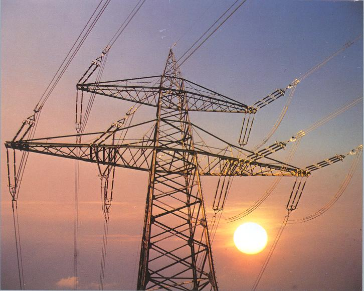
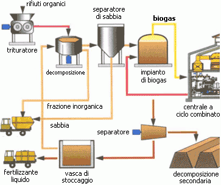
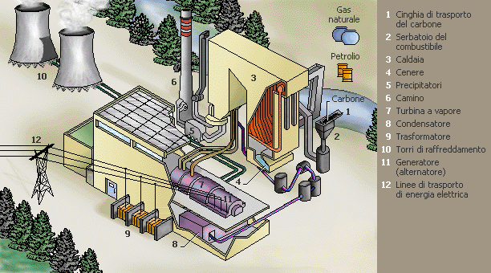
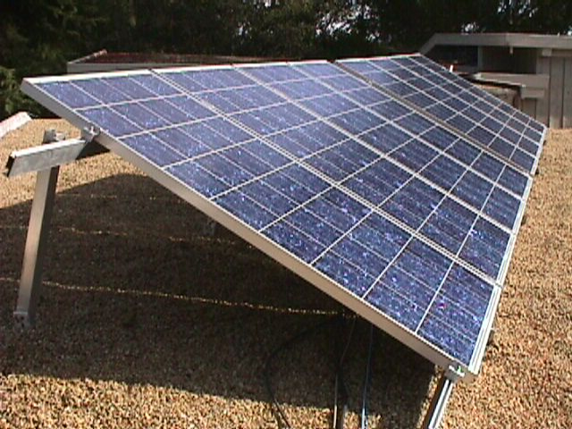
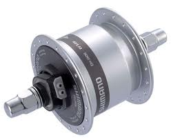
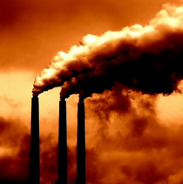
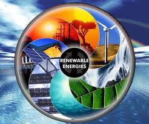
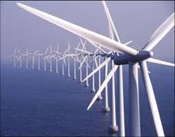
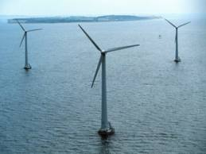
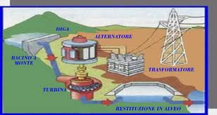

| ENERGIA ELETTRICA | In fisica, l'energia potenziale elettrica, anche detta energia potenziale elettrostatica, è l'energia potenziale del campo elettrostatico. Si tratta dell'energia posseduta da una distribuzione di carica elettrica, ed è legata alla forza esercitata dal campo generato dalla distribuzione stessa. Insieme all'energia magnetica, l'energia potenziale elettrica costituisce l'energia del campo elettromagnetico. L'energia potenziale elettrostatica può essere definita come il lavoro svolto per creare una distribuzione di carica partendo da una configurazione iniziale in cui ogni componente della distribuzione non interagisce con gli altri. Ad esempio, per un sistema discreto di cariche essa coincide con il lavoro svolto per portare le singole cariche da una posizione in cui esse hanno potenziale elettrico nullo alla loro disposizione finale. |  | PRODUZIONE DI ENERGIA ELETTRICA | La produzione di energia elettrica rappresenta il 'primo passaggio' nel processo che conduce dalla produzione fino all'utilizzatore finale di energia elettrica. Le altre fasi del processo sono la trasmissione di energia elettrica e la distribuzione di energia elettrica. Tipicamente la produzione avviene per conversione sempre a partire da una fonte primaria di energia attraverso le centrali elettriche e regolata dal dispacciamento (produzione centralizzata) oppure attraverso sistemi di autoproduzione attestati sulla rete elettrica di distribuzione (produzione distribuita). |  | CENTRALE ELETTICA | Una centrale elettrica è un impianto industriale atto alla produzione di energia elettrica. La società moderna si basa in maniera imprescindibile sull'uso dell'energia elettrica, perciò la produzione di tale energia e, conseguentemente, le centrali elettriche hanno un'importanza tecnologica e strategica fondamentale. Le centrali elettriche odierne producono energia quasi esclusivamente in corrente alternata avvalendosi di macchine elettriche denominate alternatori. Esistono eccezioni in Russia, dove, per problemi di perdite su elettrodotti estremamente lunghi, sono state create centrali elettriche in corrente continua (HVDC). |  | PANNELLI FOTOVOLTAICI | Un modulo fotovoltaico è un dispositivo optoelettronico, composto da celle fotovoltaiche, in grado di convertire l'energia solare incidente direttamente in energia elettrica mediante effetto fotovoltaico, tipicamente impiegato come generatore di corrente in un impianto fotovoltaico. Può essere meccanicamente preassemblato a formare un pannello fotovoltaico, pratica caduta in disuso con il progressivo aumento delle dimensioni dei moduli, che ne hanno di fatto incorporato le finalità. Può essere esteticamente simile al pannello solare termico, ma, pur appoggiandosi entrambi sulla captazione dell'energia solare (radiazione solare) come fonte di energia primaria, hanno scopi e funzionamento molto differenti. |  | Dinamo | Una dinamo è una macchina rotante per la trasformazione di lavoro meccanico in energia elettrica, sotto forma di corrente continua (DC, per gli inglesi, direct current) assumendo così la funzione di trasduttore. |  | CENTRALI COMBUSTIBILI FOSSILI | Le centrali termiche a carbone fanno parte della famiglia delle centrali a combustibili fossili, nelle quali l'energia contenuta nelle sorgenti primarie di energia del carbone e della lignite è convertita in energia elettrica. A causa dei residui generati da queste fonti di energia, sono richiesti dei sistemi di desolforazione dei gas di scarico particolarmente costosi. Le centrali termiche a carbone convertono fino al 45% della loro energia in elettricità. |  | CENTRALI COMBUSTIBILI NATURALI | Un combustibile è una sostanza chimica che viene ossidata nel processo di combustione, una reazione chimica di ossidazione, producendo energia termica. I combustibili per motori termici di facile evaporazione, quali le benzine, vengono detti anche carburanti. Per estensione vengono detti combustibili nucleari quelle sostanze con le quali si produce energia attraverso una reazione nucleare. | CENTRALI ALTERNATIVE | Le Energie Alternative sono tutte le forme di energie prodotte da fonti non tradizionali. L’energia elettrica viene prodotta, nella maggior parte dei casi e nella più alta percentuale, da fonti tradizionali non rinnovabili, quali la combustione del petrolio o gas sia naturali, sia liquefatti per l’alimentazione delle centrali elettriche. |  | CENTRALI EOLICHE | L'energia eolica è l'energia ottenuta dal vento ovvero il prodotto della conversione dell'energia cinetica, ottenuta dalle correnti d'aria, in altre forme di energia (elettrica o meccanica). Oggi viene per lo più convertita in energia elettrica tramite una centrale eolica, mentre in passato l'energia del vento veniva utilizzata immediatamente sul posto come energia motrice per applicazioni industriali e pre-industriali (come ad esempio nei mulini a vento). Di fatto è stata la prima forma di energia rinnovabile, assieme a quella idraulica, scoperta dall'uomo dopo il fuoco (si pensi alle vele delle navi) e una tra quelle a sostegno della cosiddetta economia verde nella società moderna. Le applicazioni più tipiche sono i parchi eolici, sebbene possa essere sfruttata anche in installazioni stand-alone su piccola scala.
VANTAGGI:
1)La fonte di energia è il vento e non si esaurirà mai
SVANTAGGI:
1) Le centrali eoliche costano tanto
2) Hanno bisogno di tanta manutenzione 3) Per funzionare hanno bisogno di vento |
  | CENTRALE IDROELETTIRCA | Per centrale idroelettrica si intende una serie di opere di ingegneria idraulica posizionate in una certa successione, accoppiate ad una serie di macchinari idonei allo scopo di ottenere la produzione di energia elettrica da masse di acqua in movimento.
L'energia prodotta dalle centrali idroelettriche è da classificarsi a tutti gli effetti come energia rinnovabile in quanto, almeno in teoria, l'acqua può essere riutilizzata infinite volte per lo stesso scopo senza subire un processo di depurazione. Il concetto di rinnovabilità è subordinato alla costanza del volume annuo degli afflussi integrali.
VANTAGGI:
1) La fonte utilizzara (l'acqua) non si esausirà mai
SVANTAGGI:
1) Costo di realizzazione molto elevato
2) Impatto ambientale elevato 3) Creando queste dighe si modifica il clima e l'ambiente della valle |
 |
|---|